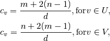

closeness_centrality¶
- closeness_centrality(G, nodes, normalized=True)[source]¶
Compute the closeness centrality for nodes in a bipartite network.
The closeness of a node is the distance to all other nodes in the graph or in the case that the graph is not connected to all other nodes in the connected component containing that node.
Parameters : G : graph
A bipartite network
nodes : list or container
Container with all nodes in one bipartite node set.
normalized : bool, optional
If True (default) normalize by connected component size.
Returns : closeness : dictionary
Dictionary keyed by node with bipartite closeness centrality as the value.
See also
betweenness_centrality, degree_centrality, sets, is_bipartite
Notes
The nodes input parameter must conatin all nodes in one bipartite node set, but the dictionary returned contains all nodes from both node sets.
Closeness centrality is normalized by the minimum distance possible. In the bipartite case the minimum distance for a node in one bipartite node set is 1 from all nodes in the other node set and 2 from all other nodes in its own set [R143]. Thus the closeness centrality for node
 in the two bipartite sets
in the two bipartite sets  with
with
 nodes and
nodes and  with
with  nodes is
nodes is
where
 is the sum of the distances from to all
other nodes.
is the sum of the distances from to all
other nodes.Higher values of closeness indicate higher centrality.
As in the unipartite case, setting normalized=True causes the values to normalized further to n-1 / size(G)-1 where n is the number of nodes in the connected part of graph containing the node. If the graph is not completely connected, this algorithm computes the closeness centrality for each connected part separately.
References
[R143] (1, 2) Borgatti, S.P. and Halgin, D. In press. “Analyzing Affiliation Networks”. In Carrington, P. and Scott, J. (eds) The Sage Handbook of Social Network Analysis. Sage Publications. http://www.steveborgatti.com/papers/bhaffiliations.pdf